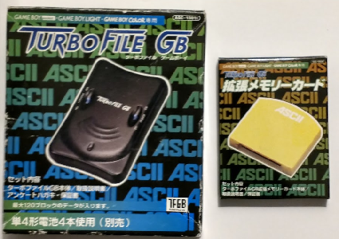
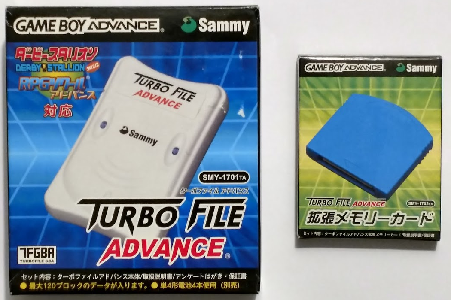
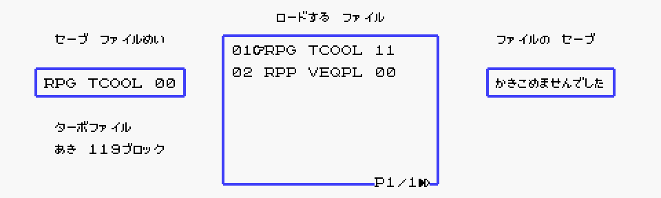
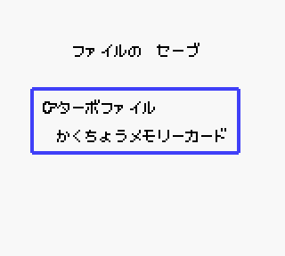
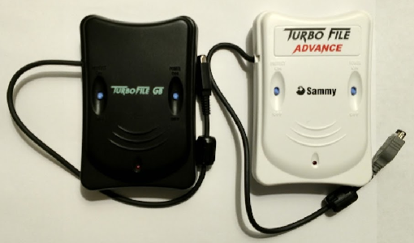
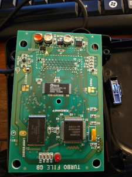
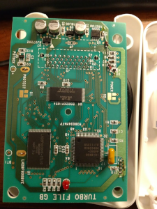
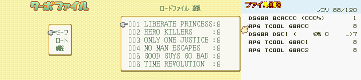

Memory Cards... on the Game Boy?
Remember that time around the turn of the century when the Game Boy started using memory cards? Now, wait a minute, that can't be right... Game Boy games saved their data to the cartridges themselves. They often had battery-backed SRAM for DMG/GBC games and some early GBA titles. FRAM, Flash, and EEPROM were used for the rest of the GBA library. Countless games didn't even have saves and just used passwords. Memory cards were the domain of systems like the Playstation 1 and Playstation 2. For Sony's disc-based consoles, it made perfect sense to have external storage because by default there was no large internal storage available. With cartridge-based handhelds, the game can house both ROM and static RAM, making the need for external memory unnecessary. Two companies, however, decided to do something on the Game Boy that had never been done before.
In March 2000, ASCII Corporation released a new game for the GBC, RPG Tsukuru GB. It was the first RPG Maker to land on a portable console, and more importantly an accessory called the Turbo File GB hit the markets at the same time. The Turbo File GB was a continuation of ASCII Corporation's line of "Turbo File" products from the Famicom and Super Famicom. These devices allowed games to write save data to an external source and often offered more storage than was commonly found in game carts at the time. The Turbo File GB proved no exception, offering dozens of save slots for RPG Tsukuru GB and allowing players to create multiple customized RPGs. Additionally, the Turbo File GB accepted memory cards that further expanded storage space. Two years later, Sammy Corporation took the reins and made the Turbo File Advance for the debut of Derby Stallion Advance. Nearly identical to the Turbo File GB, the Advance version likewise doubled its memory through swappable cards.
These two accessories were totally unknown to me earlier this year. I like to casually browse some of my favorite sellers on eBay sometimes hoping to find another Game Boy oddity. At this point in my journey to emulate all of the Game Boy's add-ons and extra hardware, I've pretty much got a complete list of all the things I need to look for. I was quite surprised to have missed not one, but two devices. While scrolling through items on my phone, I came across a weird, black, rectangular product that looked like it connected to a Game Boy. At first, I presumed it was some unlicensed gimmick, but as I investigated, I saw that not only had Nintendo given it their blessing, several games officially used it. Compatible games even had their own black and white icons typically reserved to denote major features such as Link Cable, GB Printer, Mobile Adapter GB, or IR support.
Normally, these types of icons represent very prominent and Nintendo-approved extras that Game Boy games used.
The whole idea of using memory cards with Game Boy games seems pretty farfetched, but once I found out everything was legitimate, I couldn't help but get to work. Like most every other Edge of Emulation article, accurate, technical details about the hardware is virtually non-existent. The Famicom and Super Famicom versions of the Turbo File were well documented and emulated. On the Game Boy side though, the best results I could pull from the internet were the names of compatible games (a whopping total of 4, with 2 on the GBC, 2 on the GBA) and a couple of articles that talk about the Turbo File GB in general terms. Even the old webpage introducing the Turbo File Advance is sparse on any real data (aside from the fact that it can hold 15 saves). Technically, all of the compatible games will play just fine without Turbo File support in an emulator, and through emulation we can manually make as many backup saves as we want, literally millions in fact. Even so, the Turbo File GB and Turbo File Advance mark an unexplored chapter in the Game Boy's history, one I couldn't possibly ignore. After almost 20 years, it's time to bring these devices out of the shadows.
GOING TURBO!!!
Step 1 is my favorite: shopping! Buy all the things! The Turbo File GB and Turbo File Advance aren't exactly rare, but they do command a modest price, easily selling for $30 - $50 for the unit and about $15 - $20 for the memory cards. In that regard, getting all of the hardware at once quickly adds up to a not-so-small amount of cash, and then there's buying the games. At any rate, none of the research material was difficult to find or acquire. I received my Turbo File GB first, so I began looking into how it interacted with RPG Tsukuru GB.
The Turbo File GB is a sleek, black, plastic box, roughly about the same size as a GBC. It connects to the Game Boy via its fixed Link Cable. At the very top, it has an opening for the memory card. Its shape and design bring to mind Zip Drives, albeit with less 90s aesthetic. The memory cards are essentially yellow wafers that fit inside rather tightly. The Turbo File GB takes 4 AAA batteries to power on, however, the batteries are not responsible for holding the save. Data is written either to the Turbo File GB's internal flash memory or to the card, so pulling the batteries won't result in lost saves. A little red LED indicates read and write activity, and like the rest of the Turbo File accessories, this one has a physical write-protect switch to prevent any accidental overwrites.
 
The packaging on both Turbo Files and their memory cards is strikingly similar.
RPG Tsukuru GB dedicates itself to game making, so it allows players to access the Turbo File menu right away. It isn't buried under countless options or locked behind any requirements, so anyone can boot the game and export or import stuff immediately. Poking around to see what it was capable of, I saw three choices available. Data could be saved to the Turbo File GB, data could be loaded from the Turbo File GB, and data could be erased from the Turbo File GB. Before accessing any of those, the game detects the presence of the memory card and asks if the player wants to use that or the Turbo File GB's internal memory. Data is stored as files and uses blocks of memory, and the game helpfully displays the remaining available amount. Before saving any file, it has to be named, and duplicate names are prohibited. Loading and erasing files brings up a mini-browser to select one, and it displays the name under which they were saved. Any read or write operation takes a bit of time, long enough to make me think it was frozen at first, however, the rapidly blinking LED reassured me that something was indeed happening.
After seeing all of the options in action for myself, I began emulating it in GBE+. Before doing much of anything else, I had to see exactly how the software tried to communicate with the Turbo File GB, which means recording any bytes it sends via serial input/output. Even with no code to recreate a Turbo File GB, an emulator can still examine how the game initiates a connection. That much is like getting your foot in the door. I noted that RPG Tsukuru GB kept sending the byte 0x6C over and over again, as if it were waiting for something from the other side, a sync signal. I've often described disassembly as a weapon of last resort, but I felt picking apart at least some of the game code would be useful here. I found that the GBC went through a complicated set up, waiting for the Turbo File GB to respond with 0xC6, sending a payload of its own, waiting for another sync signal, and finally waiting on the Turbo File GB for a reply payload. I started to see what the Turbo File GB was doing, but only barely. I needed more information, so I turned to a series of ROM hacks.
My first hack was a bit naive. The standard proceedure I use for devices over the Link Cable is to record all serial input/output activity when a serial interrupt is triggered. An interrupt is just a fancy way for the Game Boy to tell software that a specific event has happened and begin running code to handle it. Normally, adding my hack at the beginning of the interrupt's routine would capture every byte received by the Game Boy. With RPG Tsukuru GB, I only caught a fraction of the traffic I was looking for. The game only enables serial interrupts to flag the end of a session, after the GBC has sent its payload and the Turbo File GB has sent one as well. The hack, as a result, only obtained the very last byte of what should have been dozens of transfers. Serial interrupts, in reality, aren't necessary for the Game Boy to transmit data. They will automatically let the game know when a transfer has finished, but the game can manually check the transfer status by reading a single byte from a MMIO register. That's exactly what RPG Tsukuru GB does. It disables all interrupts while processing serial transfers, constantly pinging the register to see if the status has changed.
Instead of inserting a hack where the game handled serial interrupts, I had to place it at the very end of the transfer session. Having already disassembled the relevant code, I knew just what bytes in ROM to start changing. The second hack jumped to my custom code and read several bytes of Work RAM where the GBC temporarily stored the response from the Turbo File GB. Each of those Work RAM bytes were then saved to an empty bank of cartridge SRAM, which I could easily copy from my flashcart and examine in a hex editor. After several runs and several sets of data, I noticed a couple of interesting patterns. The data sent between the GBC and Turbo File GB looked very structured, and I soon realized that both sides were talking to each other using packets. The last byte in each payload appeared to be a checksum, which was a major clue that some sort of protocol was being used. It's not unusual to see something like this; after all, the Game Boy Printer and Mobile Adapter GB use sync signals and packets as well. Naturally, I assumed that the Turbo File GB was capable of processing commands from the packets. Below, I'll describe them all as I encountered each.
Command 0x10 - Get Status
This was the first command that appeared. It seemed to return a handful of bytes describing the Turbo File GB's status. At the start of my probe, I only saw it change a single byte depending on whether the Write-Protect switch was on or off, but I later discovered it has much more utility. The Get Status command tells the GBC about the current memory block being used, whether or not a memory card is inserted, and whether or not the Turbo File GB is ready for read/write operations.
Command 0x20 - Begin Session
The next command, I found was much less interesting. As far as I can tell, it simply initializes or prepares the Turbo File GB for other I/O commands; the GBC expects an echo packet in response, but not much more than that.
Command 0x23 - Set Read Block
I first believed that this command somehow prepared the Turbo File GB for read operations, as it always came right before Read Data was called. Later, after examining some logs from GBE+, I realized that Set Read Block actually took a byte from its packet as a parameter, an 8-bit value which in turn represented the block to access.
Command 0x40 - Read Data
I instantly suspected this command involved reading rather than writing. It couldn't have been a write command because it would appear before I'd even entered the Save Data menu in RPG Tsukuru GB. It made sense for the game to read some data beforehand to see what files were stored and how much space was left, then it could proceed to the next menu. I had to adjust my ROM hack, but I saw that the Read Data command grabbed 64 bytes at a time from the Turbo File GB. Additionally, it used two bytes from its packet to create a 13-bit offset for where inside a block the Turbo File GB should begin reading. Based on the logs from Set Read Block and Read Data, I discovered that RPG Tsukuru GB reserved the last block exclusively for file headers. As each block occupies 8KB, I calculated that the Turbo File GB interally has 1MB of space. For the year 2000, that's a lot, 8x as large as the biggest SRAM size on the GBC!
Command 0x22 - Set Write Bank
This one appears right before every Write Data command. Since I only saw this when saving to the Turbo File, it wasn't difficult to figure out its purpose. It's exactly like Set Read Bank in its format, with the key difference between them being input versus output.
Command 0x30 - Write Data
As expected, this command sent 64 bytes of data to the Turbo File GB, much the opposite of Read Data. Like its counterpart, this command takes a 13-bit parameter for the offset within the block. Other than that, I observed nothing out of the ordinary here.
Command 0x24 - End Session
After the GBC and Turbo File GB have finished communicating, the Game Boy sends this final command. It signifies that the current sesssion is terminated, meaning no more read or write operations until the GBC starts again with another Begin Session command.
The GBC sends these commands in its packets, and the Turbo File GB responds. The cycle repeats until the commands have their desired effect, such as loading a file, erasing one, or writing a new one. This chart illustrates the general flow of data at any given time.

Once I'd finished studying everything, I went to work emulating it in GBE+. As I mentioned previously, the overall flow of the Turbo File GB's protocol is very similar to other devices like the GB Printer and the Mobile Adapter GB. Getting it to work in GBE+ isn't anything too fancy. The protocol gets broken down into distinct phases: get 1st sync signal, get packet from GBC, process command, send 2nd sync signal, send response packet, rinse and repeat. The only real trick is to move onto the next stage once the emulator is absolutely sure it's finished with one part. The sync signals are simple enough; GBE+ just needs to make sure the emulated GBC sent the correct values and then respond with corresponding bytes. For receiving the GBC packet and sending the Turbo File GB packet back, GBE+ basically keeps track of how many bytes are incoming and outgoing and switches to the next state when appropiate. Unfortunately, the packets used for the Turbo File GB don't include information like packet length, so I had to manually calculate that myself and make sure the lengths were right depending on what command was being processed.
The implementation was pretty straightforward. I got an emulated Turbo File GB to save, load, and erase data. There were two bugs that I came across. The first relates to the 2nd sync signal. For whatever reason, sometimes the GBC will send an errant 0x7E byte before sending a 0xF1 byte. My code expected 0xF1 to always come first and 0x7E to come last, so when it switched states and waited for sync bytes, it would move onto the next state immediately when seeing that 0x7E byte. GBE+ moved on, but the game didn't believe the sync phase was over yet and waited until it timed out. Strangely enough, the game didn't display an error, but it only wrote half the data it was supposed to. Worse, this behavior kept happening and prevented anything else from being saved. Ultimately, the game wants to send 0xF1 0x7E, so I had to adjust my code to wait until it detected a proper sync signal instead of jumping ahead at the first 0x7E byte.
The second bug happened when I tried erasing data. The data was actually wiped clean, however, the game reported a transmission error nonetheless. It turns out the very last command, End Session, wasn't being handled correctly. I was only sending back 2 bytes in the response packet instead of 4. The game constantly verifies the checksums of any packets it receives, so this simple mistake of mine was caught by the software. The End Session command is the very last command sent when doing read/write operations, therefore the actual erasure itself worked without issue. Once I cleared up that problem, I had a perfectly emulated Turbo File GB running through GBE+.

Totally exciting pictures of Turbo File emulation! Look at those menus, and gosh, no errors. Thrilling!
Well, almost perfect. One last feature remained: memory cards. All of my tests via ROM hacks had been just the Turbo File GB itself with no memory card inserted. As a result, I only knew how the Turbo File GB read or wrote to its internal storage. Running the hacks again, this time with a memory card present, quickly gave me all the information I needed. One of the bytes from command Get Status changes to reflect whether a memory card is there or not. Ordinarily, the 4th byte of that command's response packet returns 0x1, meaning no card has been detected. However, once a card is placed inside, the 4th byte becomes 0x5 (essentially flipping a single bit). RPG Tsukuru GB watches for that difference, and when it spots 0x5, it displays a menu asking players where they want to access data from: internal storage or the memory card?

Choose wisely.
If the memory card is selected, all Set Write Bank and Set Read Bank commands change one of their parameters. The second parameter is always the block to access; the first one is a simple "0" or "1" that determines internal storage or memory card respectively. Besides that, all of the read/write commands are exactly the same. Compared to internal storage, the memory card has an identical amount of blocks, so all together the Turbo File GB held 2MB of data. To put that in perspective, the ROM for RPG Tsukuru GB is 2MB as well, so there's enough space for an entire GBC game. Dozens of smaller DMG games could easily fit onto the Turbo File GB as well. The two parameters for commands Set Read Bank and Set Write Bank basically form an 8-bit value to select a block, with the 1st parameter being Bit 7 and the 2nd parameter being Bits 6 - 0. GBE+ can then treat the emulated Turbo File GB storage as a single 2MB file on a computer and access any part whenever the game wants it.
On one very interesting note, both RPG Tsukuru GB and its sequel, Uchuu Nin Tanaka Tarou De RPG Tsukuru GB2, don't make use of all those bytes. The last block of internal storage or the memory card holds the file headers, so naturally that's off-limits. The 8 blocks before the file headers are kept empty as well, like a safety net to make sure no writes make their way to the headers. Unfortunately, the developers committed an off-by-one counting error. They should have restricted just 7 blocks prior to the file headers, not 8. As a result, the games say the maximum number of blocks is 119 instead of 120. Once players save 29 files (each taking up 4 blocks a piece), they're left with a measly 3 blocks of free space, which isn't enough for one more file. Whoops! Overall 96KB on either storage medium remains out of reach as far as the games are concerned, 32KB of which was simply due to erroneous programming.
Copy+Paste
Having fully emulated and implemented the Turbo File GB, I then focused on the second model for the Game Boy, the Turbo File Advance. Released in 2002 along with Derby Stallion Advance, the Turbo File Advance had the same functionality as the Turbo File GB, except it boasted GBA compatibility. The black case is swapped for a white one, and memory cards are green now instead of yellow. Additionally, ASCII Corporation didn't make this device; Sammy Corporation took up the mantle. Aside from the new color scheme and different link cable on the end, what exactly changed with the Turbo File Advance? Did it have more space? Did it utilize any new features? Did they completely revamp the protocol? Does it at least use less batteries?
Nope. Nothing major changed between the Turbo File GB and the Turbo File Advance. I literally copied and pasted the code from GBE's DMG core into the GBA core, renamed a few variables, and it worked right away without errors or glitches. The Turbo File Advance is practially a reshelled Turbo File GB. It has 1MB of internal space, and memory cards add another 1MB. It uses the GBA's "Normal 8-bit" mode for serial communications, which imitates DMG/GBC style transfers. The Link Cable was reworked to handle GBA games, but that's apparently the biggest physical difference. If it's not broken, don't fix it, I suppose. This discovery was mixed for me. On one hand I would have loved to have continued uncovering more mysteries, but on the other hand I was glad that things turned out to be so easy. Rather than figuring out how two separate devices worked, I just needed to study one.
  
They're practically twins. Even the insides look the same (down to the individual components). The Turbo File Advance PCB even has "TURBO FILE GB" printed on it; they didn't bother to change anything!
So, with hardly any real effort, the Turbo File Advance was conquered. Like its predecessor, only 2 games were compatible: RPG Tsukuru Advance and Derby Stallion Advance. Players could save their massive, custom RPGs replete with tons of dialog, scripted events, dungeons, boss battles, and they could also back up... a lot of horses. However, I'd be lying if I said there wasn't just one small and interesting difference between these two Turbo Files. As I dug around some of the menus for Derby Stallion Advance, I noticed one of the options to erase data did in fact return an error. Thankfully, GBE+ warned me of an unknown command, 0x34. Right away, I guessed that it was some sort of block erase or block fill command. By looking at the data the GBA passed to the Turbo File Advance, I saw that it had 3 parameters. The 1st and 2nd bytes formed a 13-bit offset within the block (much like commands Read Data and Write Data) and the 3rd byte specified the value to copy over the next 64 bytes of the block. Pretty simple and straightforward, but a bit of a curiosity.
Every other Turbo File Game Boy game (all of the RPG Makers) manually overwrote data whenever they erased something, but not Derby Stallion Advance. The Block Write command is unique to that game. In fact, the command may be exclusive to the Turbo File Advance. With some GBC homebrew software of my own, I tried to execute the block erase command from the Turbo File GB to no avail. Perhaps I needed to do a more thorough examination, but the Turbo File GB might simply be unable to process it. Consider for a moment that the commands issued from the Game Boy are not standard flash commands, nor is the packet format standard for flash-based devices. The PCB of the Turbo File GB has several components, one of which is an 8-bit microprocessor, the M38034M4 by Mitsubishi. I believe that this microprocessor directly interfaces with the Game Boy and translates the packets into valid flash commands; additionally it grabs any data that needs to go back and forth between the Game Boy and flash memory. The M38034M4 has to be programmed for that task, and thus it has code to parse any commands from the Game Boy. My theory is that the Turbo File Advance was programmed to deal with the Block Write command, while the Turbo File GB is not. I can't say definitively whether this is indeed the case, but at the moment I have not verified the Block Write command working on the Turbo File GB. It's an area that needs more investigation.
And that's really all there is to say about the Turbo File Advance. It's very nearly a clone of the Turbo File GB aside from a single command and GBA compatibility. From the software side of things, they did fix that off-by-one error, and both Derby Stallion Advance and RPG Tsukuru Advance properly report 120 blocks as the maximum free space.

Even more intense screenshots of menus! See how it works so flawlessly? Gets your blood pumping, don't it?
Filed away
That completes the Turbo File products on the Game Boy, a fascinating case of external data storage on a handheld. Long before SD and MicroSD cards were introduced, these were the solutions companies came up with. Even though today it may look rather clunky in some regards, it successfully served its purpose back then. Unfortunately, the Game Boy versions of the Turbo File died in obscurity. One can count the total number of supported games on one hand, even if you're missing a finger. In fact, the Turbo File GB and Turbo File Advance had the least amount of supported software compared to the Famicom and Super Famicom models. The 4 titles that use these accessories are all from ASCII Corporation or Enterbrain, and with the exception of Derby Stallion Advance, those games are all portable RPG Makers. With lack of widespread support and being reserved for the Japanese marketplace, these Turbo File devices seemed destined to be forgotten.
I'm not about to let it fade away, however. It doesn't matter how popular or not the Turbo Files were, they still have their place in gaming history. After almost 20 years in the dark, it's time they were examined and appreciated. As I mentioned earlier, emulating both Turbo File units doesn't add much to the overall experience with save states in emulators, or the ability to endlessly copy SRAM files on a computer. If you wanted to make 37 different RPGs to share with your friends, you don't need to emulate a Turbo File. Still, we shouldn't be content not knowing how the original hardware worked. It's necessary for video game preservation as a whole, and one can never say what sorts of findings they might unearth. If we don't dig around and poke things, we can't be sure we aren't missing out on something grand or exciting.
It's getting close to the end of the year now. I think I might be able to push out one more article around the holidays. I know last year I predicted I'd be tackling games like Tamagotchi Osucchi to Mesucchi and its exotic cartridge or some more Mobile Adapter GB games, but I want to wait until I have more material and progress on those ends. Instead, I think I'll write about something festive for a change, something to match the mood. Something bright and flashy.